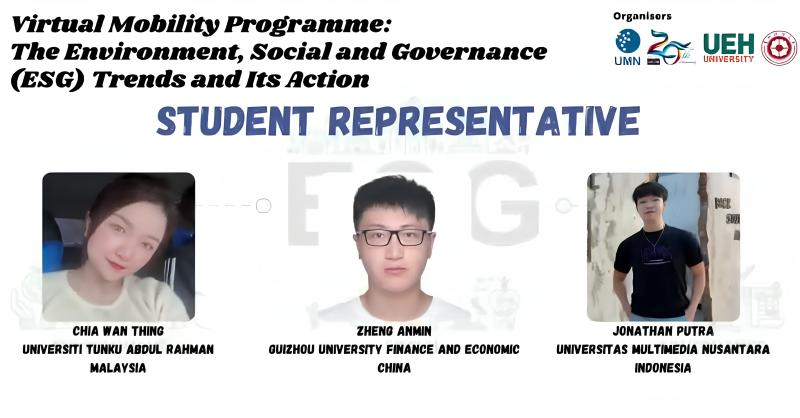
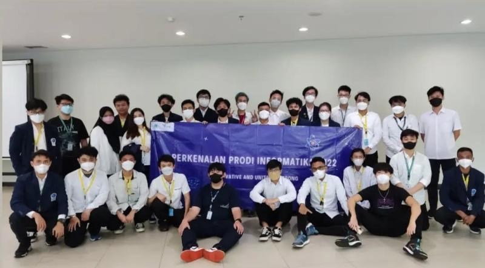
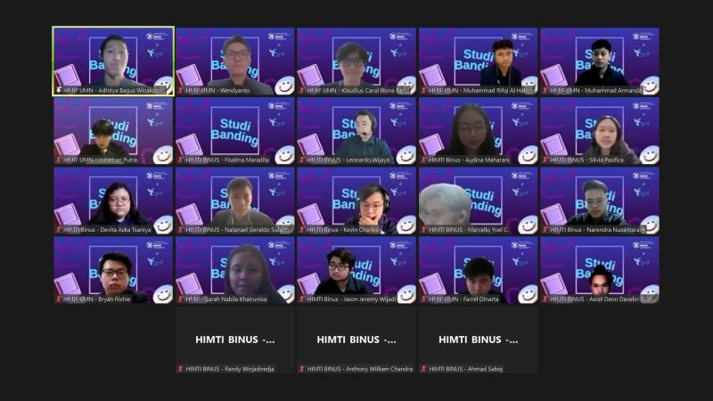
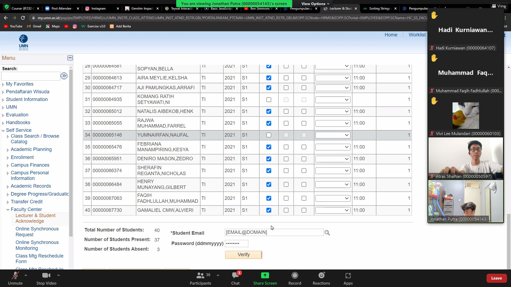
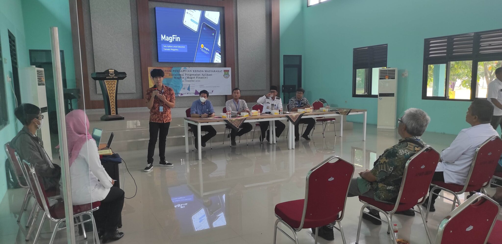
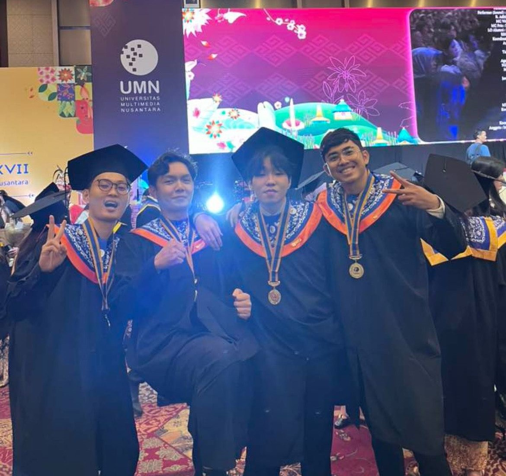

Education
Completed a Bachelor’s degree in Informatics at Multimedia
Nusantara University, officially graduating on 14 December 2024
with a Cumlaude Distinction and IPK of 3.94/4.00
Activities

Served as a Student Representative in the Virtual Mobility
Programme on Environment, Social, and Governance (ESG),
collaborating with representatives from various foreign
countries.

Served as a Committee Member for the Informatics Department
Orientation Program at Universitas Multimedia Nusantara
(UMN), contributing to the coordination and execution of
student orientation activities.

Participated in a comparative study with the BINUS
Informatics Department as part of an Informatics student
organization, focusing on the exchange of knowledge, ideas,
and best practices between student organizations and
academic departments.

Served as a Teaching and Lab Assistant, supporting junior
students in Algorithm and Data Structures and Web
Programming classes

Participated in a Student Creativity Project in
collaboration with lecturers and fellow students to develop
and deploy the Magfin (Maggot Finance) application, aimed at
streamlining and improving the efficiency of community waste
management transactions in Sepatan Timur District.

Celebrating graduation alongside my classmates after
navigating two years of online learning because of covid and
completing our final semester on campus, a milestone marked
by perseverance, growth, and shared achievement.